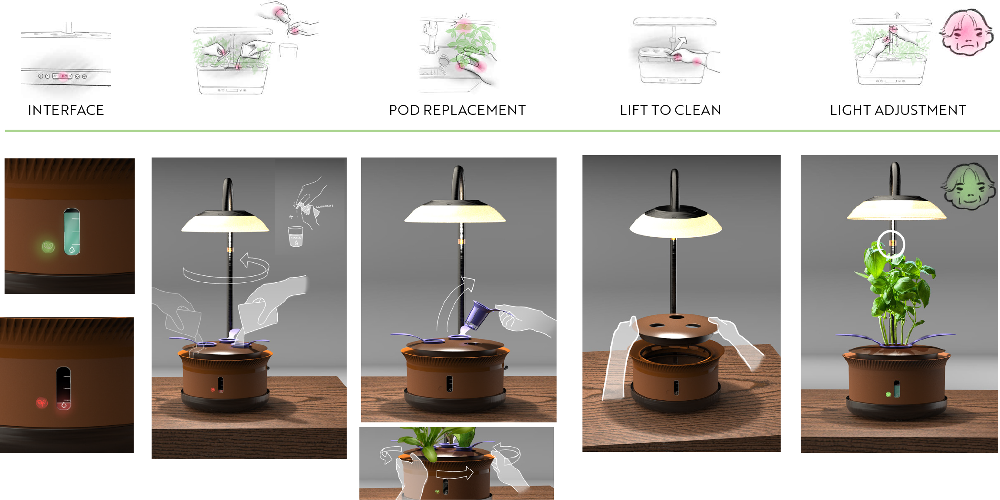

Final Design



SETTLE BENCH
With ceramic ends and a slightly curved profile, Settle gently draws people together. Designed for gathering and grounding, Settle offers a warm moment of respite.
SWAY SCREEN
A partition that glows in the sun, Sway softens and envelops a space without closing it off. It references the quiet swaying of hanging persimmons drying in the autumn air.